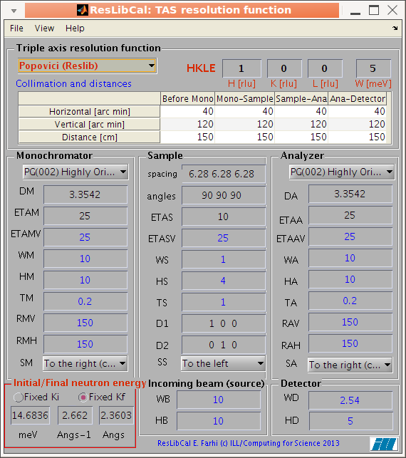
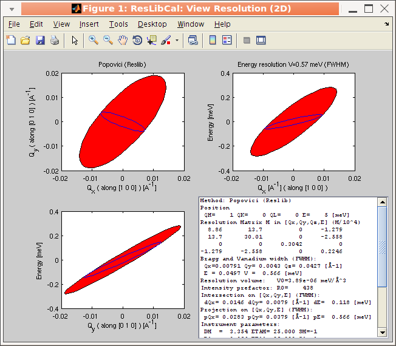
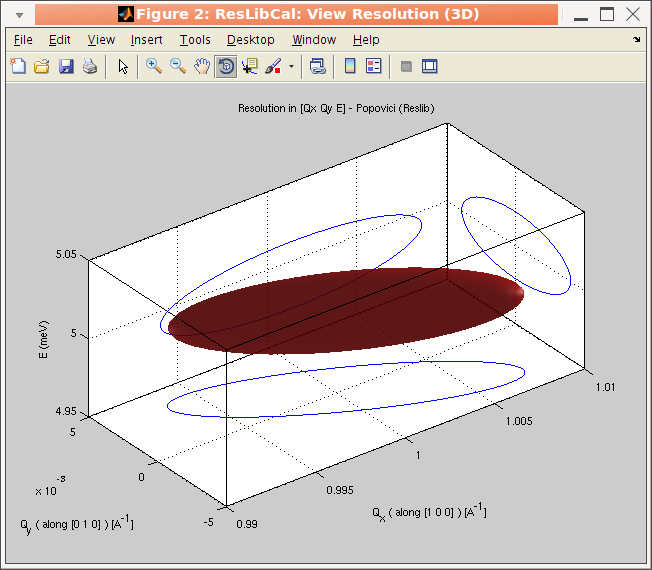
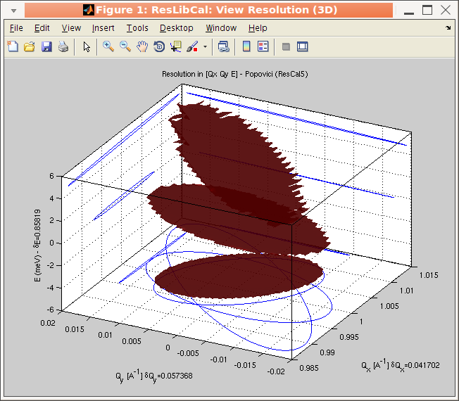

ResLibCal: a tool to compute triple-axis neutron spectrometer resolution
E. Farhi, ILL/DS/CS - Version 1.0 Feb 2013
- Purpose
- Obtaining the package
- Installation - starting
- Usage
- Usage: the main interface
- Usage: plotting the TAS resolution function
- Usage: handling computation along a scan (measurement sequences)
- Usage: reading saved configurations
- Usage: exporting the results, saving the configuration
- Usage: non interactive mode (compute only)
- Help
- Credits and disclaimer
Purpose
This ResLibCal application gathers a set of analytical computation methods to
estimate the resolution function of a triple-axis neutron spectrometer
(TAS). ResLibCal is based on Matlab. The Cooper-Nathans and Popovici methods are proposed [1-5], in different implementations from:
- ResLib (A. Zheludev)
- ResCal5 (A. Tennant and D. Mc Morrow)
- Res3ax (J. Ollivier)
- ResCal from (Hargreave,Hullah,1979), ported into vTAS_view (Y.Raoul/A. Bouvet/A. Filhol)
Obtaining the package
The package can be obtained here [ZIP 220 ko]. You can also browse the source code here.
It does not depend on any other toolbox/library.
Simply extract the application archive.
Installation - starting
Just launch ResLibCal with:
>> ResLibCal;
If you use the source code distribution (requires a Matlab license), type:
>> addpath(genpath('/path/to/ResLibCal'))
If you use the standalone (binary compiled) application, launch the application from iFit by starting:
from the terminal:
% ifit ResLibCal
from iFit standalone:
>> ResLibCal
Usage
The normal use of the application is through its GUI, which is a single window.
- The File menu allows to
import a saved configuration, export the main window image, print it,
reset to the default/saved configuration, and quit.
- The View menu allows to
select the representation of the resolution matrix, as 2D or 3D view,
select if you wish to compute it in the lattice frame (rlu) or in the
instrument frame (Q axis), force a re-computation manually, or allow an
automatic re-computation of the resolution when any change is made in
the GUI.
- The Help menu mainly bring you here.
It is also possible to use the application from a Matlab script or prompt, without starting the GUI (see below).
The computation of the resolution is carried-out in about 11 ms, but the display can be slightly longer when using the GUI.
Usage: the main interface
The main interface present all parameters required to configure a
Copper-Nathans or Popovici computation. All items have a contextual help
(bring the mouse pointer over to display a short tool-tip, with
signification and units). Parameters indicated in blue are used only in for the Popovici method. Parameters in red
are those which the user should mostly change (incident energy,
position of measurement HKLE) once the instrument configuration has been
set.
The main parameter categories are:
- The method to use
- The HKLE position, which can be vectors for computations along a scan/set of positions
- The collimators and distances in a table
- The monochromator configuration
- The sample configuration
- The analyzer configuration
- The incident beam and detector sizes
- The neutron energy setting
When any value is changed, an automatic re-computation is performed if the View/Auto-update menu item is checked (which is the default).
The result of the computation can be displayed from the View menu in 2D and 3D.
The resolution matrix is then shown either in reciprocal lattice units (rlu) [Q1,Q2,E] depending on the lattice parameters and the vectors D1 and D2 which define the orientation of the crystal. Un-checking this option in the View menu will switch to the [Qx,Qy,E] space along longitudinal momentum exchange Q.

The ResLibCal main interface. All items have contextual help. When the View/Auto-update menu item is checked, any change in the interface triggers a re-computation of the resolution, and an update of opened plots.
Usage: plotting the TAS resolution function
To compute and plot the resolution function, select the View/Resolution Ellipsoid (2D and Matrix) or View/Resolution Ellipsoid (3D)
menu item. The 2D view also prints the resolution function, its
projection (flat phonon width) and intersection (Bragg width), and
equivalent ResCal parameters. The 3D view also shows the ellipsoid
projections. The corresponding full width values are indicated.

The 2D plot of the TAS resolution function, with a text box containing the computation results and detailed configuration.

The 3D plot of the TAS resolution function. The axis has a contextual menu allowing to change the plot rendering.
Usage: handling computation along a scan (measurement sequences)
Any
HKLE setting can be assign a vector, so that the resolution will be
computed, and potted in GUI mode for all measurements. The vector should
be set as values separated by spaces.
An example is for instance
H=1 K=0 L=0
W=-5 0 5
which shows a 3 steps scan along the energy axis.
Usage: reading saved configurations
The
'File/Open...' menu item allows to read a saved
ResLibCal configuration (see below), a
ResCal5 configuration (42 or 27 numbers), or any file with named Rescal parameters, such as in an ILL TAS data ascii file.
Usage: exporting the results, saving the configuration
The results can be saved using the 'File/Saveas...' menu item. Enter a '.m'
filename, and the full ResLibCal configuration (instrument, sample,
position, method) is saved as a Matlab script. An example of such configuration file is available here.
You can further edit this
file and change manually values in the 'EXP' ResLib-compatible
structure.
The main ResLibCal GUI can also be exported as graphics image in a set
of formats, including PDF, EPS, PNG, TIFF, BMP, and Matlab Fig. Plot windows can be exported using the File/Saveas menu item.
When exiting the application, the current configuration is saved in the Matlab preferences directory.
Usage: non interactive mode (compute only)
It is possible to compute the resolution without launching the GUI, which is then very fast.
For this, send the configuration file from which the computation is defined as an argument to ResLibCal:
>> out = ResLibCal('config_file')
ans =
Title: 'ResLibCal configuration'
handle: 173.0160
EXP: [1x1 struct]
resolution: [1x1 struct]
ResCal: [1x1 struct]
The file can be a saved ResLibCal configuration (see below), a ResCal5
configuration (42 or 27 numbers), or any file with named Rescal
parameters, such as in an ILL TAS data ascii file. Alternatively, an EXP
ResLib or full ResLibCal configuration structure can be sent, as well
as a ResCal parameter list with keyword 'Rescal:'.
>> out = ResLibCal('ResCal: DA=3.355; DM=3.355; ...')
In order to modify an existing configuration ResLib EXP or full ResLibCal out, use:
>> out = ResLibCal('ResCal: DA=3.355; DM=3.355; ...', out or EXP structure)
>> out = ResLibCal('file', out or EXP structure)
The result is then available in 'out.resolution'
>> out.resolution
method: 'Popovici (ResLib)'
R0: 357.5551
RM: [4x4 double] % resolution matrix in [Qx,Qy,E]
RMS: [4x4 double] % resolution matrix in [Q1,Q2,E] using D1 and D2
The parameters used for the computation are listed in the 'out.EXP'
structure (ResLib-like), but are also shown in the Rescal terminology in
'out.ResCal'.
>> out.ResCal
ans =
DM: 3.3542
DA: 3.3542
ETAM: 30
ETAA: 25
ETAS: 5
SM: -1
SS: 1
SA: -1
KFIX: 2.6620
FX: 2
ALF1: 40
ALF2: 40
ALF3: 40
ALF4: 40
BET1: 120
BET2: 159.9648
BET3: 120
BET4: 120
AS: 6.2800
BS: 6.2800
CS: 6.2800
AA: 90
BB: 90
CC: 90
AX: 1
AY: 0
AZ: 0
BX: 0
BY: 1
BZ: 0
QH: 2
QK: 0
QL: 0
EN: 0
DQH: 0
DQK: 0
DQL: 0
DEN: 1
GH: 0
GK: 0
GL: 1
GMOD: 0
BeamShape: 1
WB: 10
HB: 10
Guide: 0
GDH: 0
GDV: 0
SampleShape: 1
WS: 1
TS: 1
HS: 4
DetecteorShape: 1
WD: 2.5400
HD: 5
TM: 0.2000
WM: 10
HM: 10
TA: 0.2000
WA: 10
HA: 10
L1: 150
L2: 150
L3: 150
L4: 150
RMH: 0.0067
RMV: 0.0067
RAH: 0.0067
RAV: 0.0067
You can change any configuration parameter, including the method for the computation:
>> out.EXP.method = 'Cooper-Nathans ResCal'
The method should mention 'Cooper-Nathans' or 'Popovici', with a flavour 'ResLib','ResCal' or 'Res3Ax' as free text. The position of the measurement is:
>> [ out.EXP.QH out.EXP.QK out.EXP.QL out.EXP.W ]
ans =
2 0 0 0
>> out.EXP.W = 1;
>> out = ResLibCal(out); % request a new computation with modified choices
The full list of ResLib parameters are described in the ResLib package documentation.
Help
If you find bugs please send them to me [farhi (at) ill.fr] with:
- your Matlab version
- the ResLibCal version which you can get from the Help/About menu item.
- the TAS configuration you use and the associated procedure to reproduce the error
- a copy of the error messages produced by the script/command.
- a smile ;-)
Credits and disclaimer
This application was written by E. Farhi (c) ILL/DS/CS 2013 <farhi@ill.eu> using
- ResLib (A. Zheludev), using especially ResMat, ResMatS and ResPlot3D
- ResCal5 (A. Tennant and D. Mc Morrow), using especially rc_cnmat, rc_popma, rc_projs
- Res3ax (J. Ollivier), using res3ax5
- ResCal from (Hargreave,Hullah,1979), ported into vTAS_view (Y. Raoul/A. Bouvet/A. Filhol)
Some bugs have been corrected in ResLib, ResCal5/rc_popma, and Res3ax by cross comparing codes and independent
benchmarking.
The application is distributed with an EUPL license (GPL compatible).
References:
[1] M. J. Cooper and R. Nathans, Acta Cryst. 23, 357, (1967).
[2] N. J. Chesser and J. D. Axe, Acta Cryst. A29, 160, (1972).
[3] M. Popovici, Acta Cryst A31, 507 (1975).
[4] G. E. Bacon and R. D. Lowde, Acta Cryst. (1948).
[5] S. A. Werner and R. Pynn, J. Appl. Phys. 42, 4736, (1971).
Disclaimer:
This software is experimental, and should not be considered
bullet-proof. In particular, expect bugs - which should be
reported to me [farhi (at) ill.fr]
if you want them to be fixed quickly. There is no guaranty that the
resolution computation is correct, but as we propose a set of methods,
we expect that it gives a fair representation of its accuracy.
E.
Farhi - ResLibCal - $Date: 2013-06-28 10:23:47 +0200 (Fri, 28 Jun 2013) $ $Revision: 1075 $ 
{kind=link}